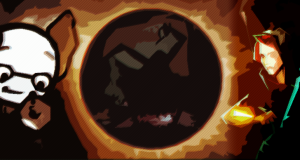
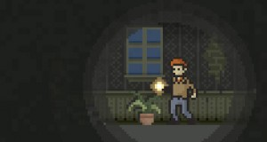
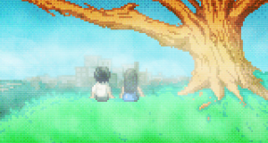
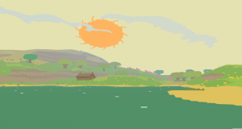

- July 15, 2014
 Analysis Paralysis
Analysis Paralysis - June 23, 2014
 londongamediary.com
londongamediary.com - April 12, 2014
 Introducing: Gods Will Be Watching
Introducing: Gods Will Be Watching - April 8, 2014
 Review: Monument Valley
Review: Monument Valley - April 7, 2014
 Introducing: Shelter 2
Introducing: Shelter 2 - April 3, 2014
 Introducing: Alone With You
Introducing: Alone With You - April 2, 2014Service Update
- April 1, 201414 for '14 - Part 4
- February 28, 2014Review: Fez
- February 27, 201414 for ’14 - Part 3
- January 19, 201414 for '14 - Part 2
- January 17, 201414 for '14 - Part 1
- January 16, 2014A Month with the One
- February 28, 2013IGF Focus: Little Inferno
- February 25, 2013IGF Focus
- May 2, 2012Home: It's Where The Horror Is
- April 28, 2012Review: The Walking Dead Episode 1: A New Day
- April 12, 2012Review: Lone Survivor
- April 10, 2012Proteus: Exploring an Ethereal Soundscape
- April 10, 2012Push Start